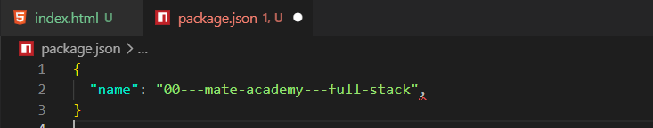
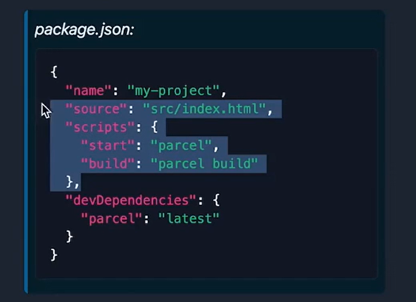
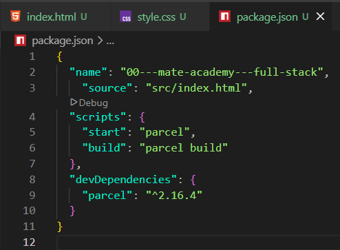
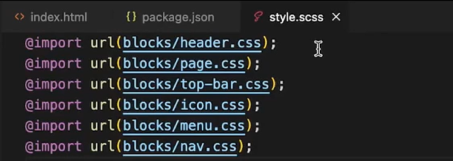
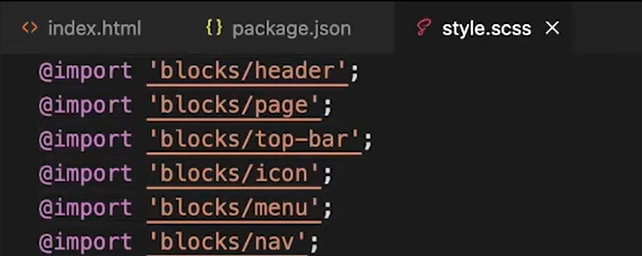
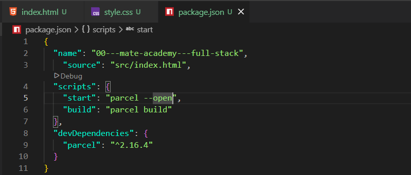
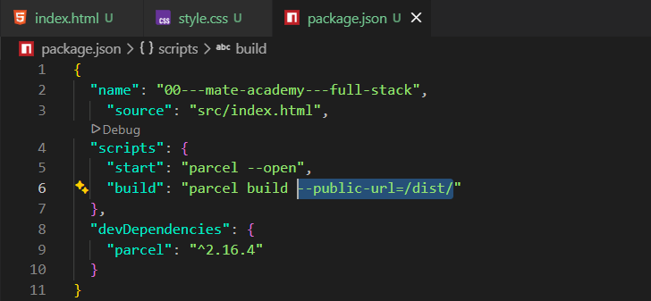

Use Parcel for building project
Intro
Aqui iremos ver como fazer o SASS SCSS funcionar corretamente.
Aqui iremos ver como fazer o SASS SCSS funcionar corretamente.
Para podermos utilizar o SCSS, precisamos fazer a conversão, pois os navegadores não interpretam arquivos SCSS.
Parcel é uma ferramenta que automatiza várias tarefas do desenvolvimento front-end. Quando você usa SCSS, o navegador não entende arquivos .scss diretamente. O Parcel fica observando seus arquivos e:
Sem o Parcel, você precisaria executar o Sass manualmente:
sass --watch style.scss style.css
parcel index.html
Podemos fazer sua instalação aqui.
No momento, nosso projeto não está configurado para trabalhar com pacotes npm.
Para configurá-lo, iremos abrir nosso terminal e executar: npm init -y. Esse comando irá criar o arquivo package.json do projeto.
Feito isso, será criado um arquivo JSON contendo as configurações do projeto. Nele iremos adicionar os pacotes que forem necessários, como linters, ferramentas de teste e outras dependências.
1) Na aula iremos excluir todo o conteúdo, exceto o campo name:

2) Em seguida iremos instalar a biblioteca Parcel. Para isso, basta copiar o comando disponível na seção Install do site e executá-lo no terminal.
3) Para que funcione corretamente, nosso arquivo HTML deve estar dentro de uma pasta chamada src. Para isso, basta criarmos essa pasta e colocarmos dentro dela arquivos como index.html, estilos, imagens e demais recursos.
4) Após isso, podemos executar o comando npx parcel src/index.html.
5) Ainda no site, podemos copiar o código sugerido para adicionarmos ao arquivo package.json:


Para iniciar o projeto, executamos o comando npm start. Com isso, o script configurado no arquivo package.json será executado.
Após executá-lo, veremos nosso processo de compilação em andamento.
No SASS, as importações de arquivos SCSS são feitas de forma diferente das importações em CSS. Por exemplo:


Se desejarmos que o navegador seja aberto automaticamente após iniciarmos o projeto, podemos adicionar a opção --open em nosso arquivo package.json, ficando da seguinte forma:

Quando executamos o comando build, o Parcel pega todos os arquivos do projeto e cria uma versão otimizada. Ele converte o SCSS para CSS, reduz o tamanho dos arquivos, organiza as dependências e prepara tudo para publicação. Essa versão pronta fica dentro da pasta dist.
O nome vem de distribution (distribuição), pois essa é a pasta que será distribuída aos usuários quando o site estiver publicado.

O --public-url=dist/ serve para informar ao Parcel onde os arquivos gerados pelo build estarão localizados quando o site for executado.
Quando o Parcel cria a pasta dist, ele precisa montar os caminhos para arquivos como CSS, JavaScript e imagens. O --public-url=dist/ ajuda o Parcel a gerar esses caminhos corretamente.
Caso ocorra algum erro, podemos excluir a pasta dist, corrigir o problema e executar novamente o comando npm run build.
Os caminhos das imagens do projeto devem ser definidos de forma relativa ao arquivo principal.
Esse processo deve ser realizado após selecionar a pasta do projeto em que estamos trabalhando utilizando o comando cd. Caso esteja trabalhando com vários projetos, será necessário acessar a pasta correta antes de executar os comandos. O mesmo processo deve ser realizado separadamente para cada projeto.